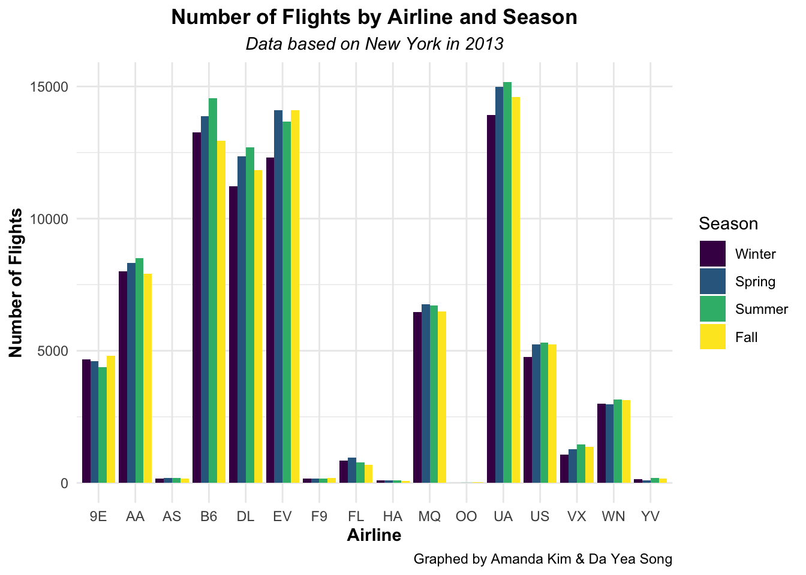
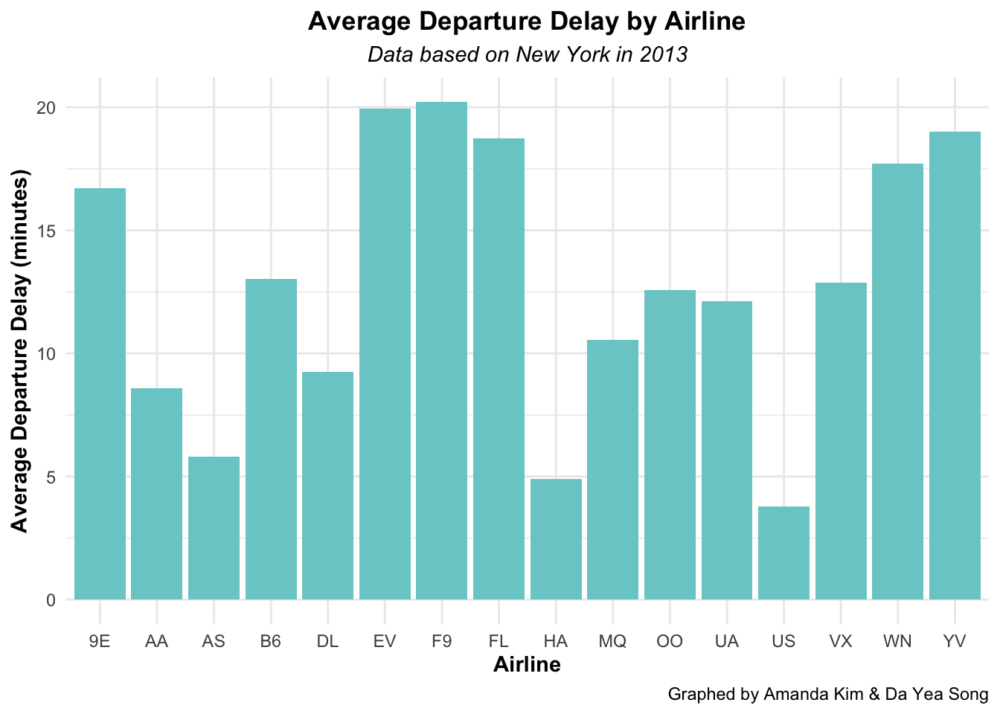
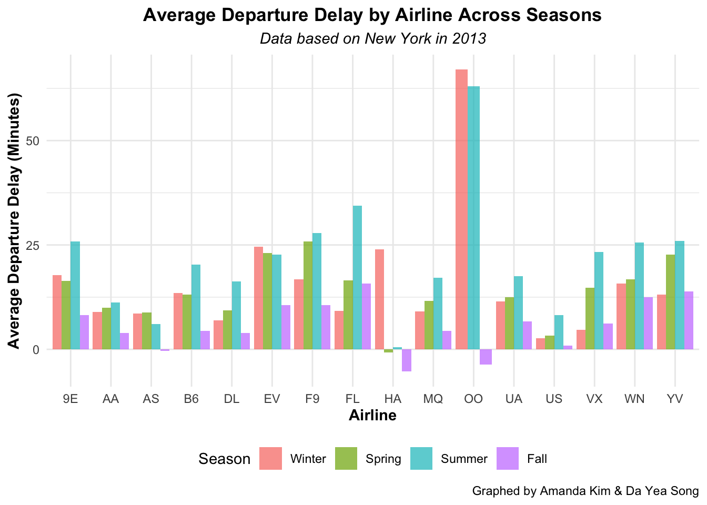
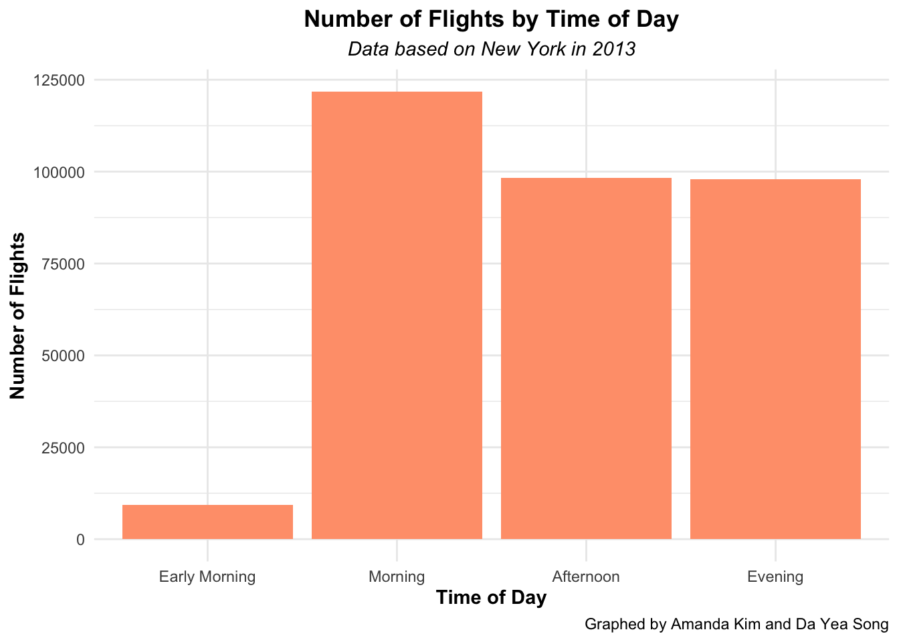
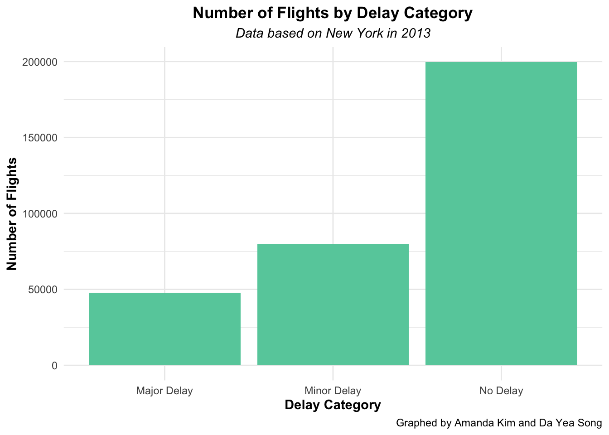

suppressPackageStartupMessages(library(caret))
suppressPackageStartupMessages(library(DBI))
suppressPackageStartupMessages(library(dplyr))
suppressPackageStartupMessages(library(ggplot2))
suppressPackageStartupMessages(library(nycflights13))
suppressPackageStartupMessages(library(pROC))
suppressPackageStartupMessages(library(RSQLite))
suppressPackageStartupMessages(library(viridis))Project 3
Completed by: Amanda Kim (akim148) and Da Yea Song (dsong13)
Part 1
In this part, you and your partner will use the DBI and RSQLite packages to write SQL queries, explore and summarize the data, visualize the data, and summarize your findings.
Using the data you picked, choose a question to investigate. For example, if you are using the nycflights13 dataset, maybe you want to understand if there are certain days of the week that flights are more delayed than other days of the week. Describe what is the question you aim to answer with the data and what you want to visualize.
If it’s already a SQL database, read into R using the
DBIandRSQLitepackages. If it’s not already a SQL database, create a new SQL database and use thedbWriteTable()function to add at minimum three tables to the SQL database.flight_data <- dbConnect(RSQLite::SQLite(), "nycflights13.db") # Create SQLite database dbWriteTable(flight_data, "flights", flights, overwrite = TRUE) dbWriteTable(flight_data, "weather", weather, overwrite = TRUE) dbWriteTable(flight_data, "airports", airports, overwrite = TRUE) dbListTables(flight_data)[1] "airports" "flights" "weather"# View dataset variables flights_columns <- dbListFields(flight_data, "flights") weather_columns <- dbListFields(flight_data, "weather") airports_columns <- dbListFields(flight_data, "airports") # Display the column names print(flights_columns)[1] "year" "month" "day" "dep_time" [5] "sched_dep_time" "dep_delay" "arr_time" "sched_arr_time" [9] "arr_delay" "carrier" "flight" "tailnum" [13] "origin" "dest" "air_time" "distance" [17] "hour" "minute" "time_hour"print(weather_columns)[1] "origin" "year" "month" "day" "hour" [6] "temp" "dewp" "humid" "wind_dir" "wind_speed" [11] "wind_gust" "precip" "pressure" "visib" "time_hour"print(airports_columns)[1] "faa" "name" "lat" "lon" "alt" "tz" "dst" "tzone"
Important
The output has been limited to display only the first 10 rows to improve readability. If you’d like to view the entire dataset, please remove n = 10 from the end of each code block.
Write three SQL queries using
dbGetQuery()to explore and summarize the data. You must use at least five different SQL functions (e.g.SELECT,GROUP BY,DISTINCT,SUM, etc).# QUERY 1: The number of flights by airline and delays in NY in 2013 by season query1 <- " SELECT carrier AS airline, CASE WHEN month IN (12, 1, 2) THEN '1' -- Winter WHEN month IN (3, 4, 5) THEN '2' -- Spring WHEN month IN (6, 7, 8) THEN '3' -- Summer WHEN month IN (9, 10, 11) THEN '4' -- Fall END AS season, COUNT(*) AS total_flights, SUM(CASE WHEN dep_delay > 0 THEN 1 ELSE 0 END) AS delayed_flights FROM flights GROUP BY carrier, season " query_result1 <- dbGetQuery(flight_data, query1) head(query_result1, n=10)airline season total_flights delayed_flights 1 9E 1 4665 1827 2 9E 2 4600 1650 3 9E 3 4387 2071 4 9E 4 4808 1515 5 AA 1 8016 2841 6 AA 2 8312 2504 7 AA 3 8495 2825 8 AA 4 7906 1992 9 AS 1 172 74 10 AS 2 184 59# QUERY 2: The average number of departure delay minutes by airlines in NY in 2013 query2 <- " SELECT carrier AS airline, AVG(dep_delay) AS avg_delay_minutes FROM flights WHERE dep_delay IS NOT NULL GROUP BY carrier ORDER BY avg_delay_minutes DESC " query_result2 <- dbGetQuery(flight_data, query2) head(query_result2, n=10)airline avg_delay_minutes 1 F9 20.21554 2 EV 19.95539 3 YV 18.99633 4 FL 18.72607 5 WN 17.71174 6 9E 16.72577 7 B6 13.02252 8 VX 12.86942 9 OO 12.58621 10 UA 12.10607# QUERY 3: Departure delay minutes by airline across seasons query3 <- " SELECT carrier AS airline, CASE WHEN month IN (12, 1, 2) THEN '1' -- Winter WHEN month IN (3, 4, 5) THEN '2' -- Spring WHEN month IN (6, 7, 8) THEN '3' -- Summer WHEN month IN (9, 10, 11) THEN '4' -- Fall END AS season, AVG(dep_delay) AS avg_delay_minutes FROM flights WHERE dep_delay IS NOT NULL GROUP BY carrier, season ORDER BY season, avg_delay_minutes DESC " query_result3 <- dbGetQuery(flight_data, query3) head(query_result3, n=10)airline season avg_delay_minutes 1 OO 1 67.000000 2 EV 1 24.636872 3 HA 1 23.954023 4 9E 1 17.778840 5 F9 1 16.791667 6 WN 1 15.703767 7 B6 1 13.480288 8 YV 1 13.069767 9 UA 1 11.476110 10 FL 1 9.250614Write two SQL queries to create new features from existing data. For example, if using
nycflights13, you could think about how toBin departure times into time-of-day categories (e.g., morning, afternoon, evening).
Lag features like the previous day’s average delay by carrier, which can be helpful for predictions.
Merge additional weather data (such as hourly temperature, precipitation, etc., if available). e.g. this could be done using SQL joins.
# QUERY 1: Binning departure times into time-of-day categories query_time_of_day <- " SELECT *, CASE WHEN dep_time BETWEEN 0 AND 600 THEN 'Early Morning' WHEN dep_time BETWEEN 601 AND 1200 THEN 'Morning' WHEN dep_time BETWEEN 1201 AND 1700 THEN 'Afternoon' WHEN dep_time BETWEEN 1701 AND 2400 THEN 'Evening' ELSE 'Unknown' END AS time_of_day FROM flights " flights_time_of_day <- dbGetQuery(flight_data, query_time_of_day) flights_time_of_day <- flights_time_of_day %>% filter(complete.cases(.)) %>% select(dep_delay, carrier, time_of_day) head(flights_time_of_day, n=10)dep_delay carrier time_of_day 1 2 UA Early Morning 2 4 UA Early Morning 3 2 AA Early Morning 4 -1 B6 Early Morning 5 -6 DL Early Morning 6 -4 UA Early Morning 7 -5 B6 Early Morning 8 -3 EV Early Morning 9 -3 B6 Early Morning 10 -2 AA Early Morning# QUERY 2: Creating a delay category based on departure delay query_delay_category <- " SELECT *, CASE WHEN dep_delay <= 0 THEN 'No Delay' WHEN dep_delay > 0 AND dep_delay <= 30 THEN 'Minor Delay' WHEN dep_delay > 30 THEN 'Major Delay' ELSE 'Unknown' END AS delay_category FROM flights " flights_delay_category <- dbGetQuery(flight_data, query_delay_category) flights_delay_category <- flights_delay_category %>% filter(complete.cases(.)) %>% select(dep_delay, carrier, delay_category) head(flights_delay_category, n=10)dep_delay carrier delay_category 1 2 UA Minor Delay 2 4 UA Minor Delay 3 2 AA Minor Delay 4 -1 B6 No Delay 5 -6 DL No Delay 6 -4 UA No Delay 7 -5 B6 No Delay 8 -3 EV No Delay 9 -3 B6 No Delay 10 -2 AA No Delay
Visualize your data by creating a plot with
ggplot2. For example, if usingnycflights13, you could think about how to visualize delays by month, carrier, or weather conditions.# Results 1: The number of flights by airline and season query_result1$season <- factor( query_result1$season, levels = c("1", "2", "3", "4"), labels = c("Winter", "Spring", "Summer", "Fall") ) ggplot(query_result1, aes(x = airline, y = total_flights, fill = season)) + geom_bar(stat = "identity", position = "dodge") + labs( title = "Number of Flights by Airline and Season", subtitle = "Data based on New York in 2013", caption = "Graphed by Amanda Kim & Da Yea Song", x = "Airline", y = "Number of Flights", fill = "Season" ) + scale_fill_viridis_d(option = "D") + theme_minimal() + theme( plot.title = element_text(face = "bold", hjust = 0.5), plot.subtitle = element_text(face = "italic", hjust = 0.5), axis.title.x = element_text(face = "bold"), axis.title.y = element_text(face = "bold") )
# Results 2: Create a plot for average departure delay by airline ggplot(query_result2, aes(x = airline, y = avg_delay_minutes)) + geom_bar(stat = "identity", position = "dodge", fill = "darkslategray3") + labs( title = "Average Departure Delay by Airline", subtitle = "Data based on New York in 2013", caption = "Graphed by Amanda Kim & Da Yea Song", x = "Airline", y = "Average Departure Delay (minutes)" ) + theme_minimal() + theme( plot.title = element_text(face = "bold", hjust = 0.5), plot.subtitle = element_text(face = "italic", hjust = 0.5), axis.title.x = element_text(face = "bold"), axis.title.y = element_text(face = "bold") )
# Results 3: Average delays for each airline across seasons query_result3$season <- factor( query_result3$season, levels = c("1", "2", "3", "4"), labels = c("Winter", "Spring", "Summer", "Fall") ) ggplot(query_result3, aes(x = airline, y = avg_delay_minutes, fill = season)) + geom_bar(stat = "identity", position = "dodge", alpha = 0.7) + labs( title = "Average Departure Delay by Airline Across Seasons", subtitle = "Data based on New York in 2013", caption = "Graphed by Amanda Kim & Da Yea Song", x = "Airline", y = "Average Departure Delay (Minutes)", fill = "Season" ) + theme_minimal() + theme( plot.title = element_text(face = "bold", hjust = 0.5), plot.subtitle = element_text(face = "italic", hjust = 0.5), axis.title.x = element_text(face = "bold"), axis.title.y = element_text(face = "bold"), legend.position = "bottom" )
# Query 1: Time-of-Day Categories flights_time_of_day$time_of_day <- factor( flights_time_of_day$time_of_day, levels = c("Early Morning", "Morning", "Afternoon", "Evening") ) ggplot(flights_time_of_day, aes(x = time_of_day)) + geom_bar(fill = "lightsalmon") + labs( title = "Number of Flights by Time of Day", subtitle = "Data based on New York in 2013", caption = "Graphed by Amanda Kim and Da Yea Song", x = "Time of Day", y = "Number of Flights" ) + theme_minimal() + theme( plot.title = element_text(face = "bold", hjust = 0.5), plot.subtitle = element_text(face = "italic", hjust = 0.5), axis.title.x = element_text(face = "bold"), axis.title.y = element_text(face = "bold") )
# Query 2: Flight Delay Categories ggplot(flights_delay_category, aes(x = delay_category)) + geom_bar(fill = "mediumaquamarine") + labs( title = "Number of Flights by Delay Category", subtitle = "Data based on New York in 2013", caption = "Graphed by Amanda Kim and Da Yea Song", x = "Delay Category", y = "Number of Flights" ) + theme_minimal() + theme( plot.title = element_text(face = "bold", hjust = 0.5), plot.subtitle = element_text(face = "italic", hjust = 0.5), axis.title.x = element_text(face = "bold"), axis.title.y = element_text(face = "bold") )
Report your findings. Provide a paragraph summarizing your methods and key findings. Include any limitations or potential biases in your analysis. Be sure to comment and organize your code so is easy to understand what you are doing.
Across all airlines, it seems like season #3 (“Summer”) is, on average, the highest in departure delay (in minutes) compared to other seasons. Comparing all 16 airlines, F9, EV, YV have the highest average departure delays. US, HA, and AS airlines have the lowest departure delays (in minutes). When comparing all airlines across seasons, OO airline had the largest average departure delay during the Winter and Spring (close to 60-70 minutes). It’s important to highlight that HA airlines may have had relatively high average departure delays during the winter, in the Spring and Fall, HA airlines have had a negative average departure delay, signifying that the airline is departing early.
Limitations in Analysis:
Dataset Scope: The dataset only includes flights departing from NYC airports, which means that our analysis is not representative of airlines’ performance nationwide or globally.
Sample Size: Airlines with fewer flights in the dataset might have averages that are not as reliable or statistically significant compared to airlines with a larger number of flights.
External Factors to Consider: Delays may not be entirely within the airline’s control. Factors like airport congestion, air traffic control delays, or weather at origin/destination airports can all contribute to departure delays.
Potential Biases:
Airport-Specific Bias: Since the dataset focuses only on NYC airports, delays may be influenced more by NYC airport operations, infrastructure, or congestion, rather than the airlines themselves.
Weather Bias: NYC airports are heavily affected by winter weather, potentially biasing results for airlines with many winter flights departing from NYC.
Excluded Flights: Flights canceled or diverted due to extreme weather or other factors are excluded from delay calculations, potentially underestimating the operational challenges faced by certain airlines or in certain seasons.
Data cleaning:
- dbWriteTable() used to write data from R into a table in a database
- SELECT() specifies which columns of data we want to retrieve from a database table
- GROUP BY used to group rows that have the same values in specified columns into summary rows
- ORDER BY sorts the result set by one or more columns in ascending (ASC) or descending (DESC) order.
- SUM calculates the total (sum) of a numeric column
- CASE implements conditional logic within a query, similar to an IF or SWITCH statement in programming
- COUNT counts the number of rows that match a condition, or counts non-NULL values in a column
Visualization:
- geom_bar() to plot the 5 plots looking at average minutes delayed across seasons and by airline
Part 2
In this part, you and your partner will use use caret or tidymodels to train a predictive model for a task or outcome, perform model evaluation, and summarize your findings. For this part, you can use the data directly in R as standard dataframes or tibbles. You do not need to build the models In this section, you must do the following when building your prediction model:
Research Question: Can weather conditions predict departure delays for American Airlines (AA) from NYC in 2013?
Data Set Up
data(flights)
data(weather)# Select flight details for American Airlines (AA)
aa_flights <- flights %>%
filter(carrier == "AA") %>%
select(dep_delay, distance, month, day)
# Select weather conditions from the dataset
weather <- weather %>%
select(month, day, visib, precip, wind_speed)
# Calculate the average of weather conditions per day
weather_aggregated <- weather %>%
group_by(month, day) %>%
summarize(
visib = mean(visib, na.rm=TRUE),
precip = mean(precip, na.rm=TRUE),
wind_speed = mean(wind_speed, na.rm=TRUE),
.groups = "drop"
)
Note
The average daily weather conditions were calculated since weather data was recorded at multiple time points throughout each day.
# Merge flight details with weather conditions
aa_data <- aa_flights %>%
left_join(weather_aggregated, by = c("month", "day"))
# Create two new variables (delay_status and season)
aa_data <- aa_data %>%
mutate(
delay_status = ifelse(dep_delay <= 0, 0, 1), # 0 (no delay), 1 (delay)
season = case_when(
month %in% c(12, 1, 2) ~ 1, # Winter
month %in% c(2, 3, 4) ~ 2, # Spring
month %in% c(5, 6, 7) ~ 3, # Summer
month %in% c(8, 9, 10) ~ 4, # Fall
)
)
# Remove any rows with missing values
aa_data <- na.omit(aa_data)Split the data into training and test sets.
set.seed(100) train <- createDataPartition(aa_data$delay_status, p = 0.8, list = FALSE) train_data <- aa_data[train, ] test_data <- aa_data[-train, ] dim(train_data)[1] 23568 9dim(test_data)[1] 5892 9Choose a machine learning model appropriate for the task (e.g. consider if it’s a binary or continuous outcome and choose an appropriate model). For example, if you are using the
nycflights13dataset, you could could pickLogistic Regression (if predicting delay as a binary outcome, e.g., delay/no delay).
Linear Regression (if predicting the length of delay in minutes).
Decision Trees or Random Forests (for both binary classification or regression).
Since the outcome involves predicting whether an AA flight will be delayed or not, we are working with a binary classification task. Therefore, we selected a logistic regression model.
train_data$delay_status <- as.factor(train_data$delay_status) test_data$delay_status <- as.factor(test_data$delay_status)
Train the model using
caretortidymodelsin R using the training data.# Train a logistic regression model model <- train( delay_status ~ distance + visib + precip + wind_speed + season, data = train_data, method = "glm", family = "binomial", trControl = trainControl(method = "cv", number = 5) ) summary(model)Call: NULL Coefficients: Estimate Std. Error z value Pr(>|z|) (Intercept) 0.0173149 0.1109166 0.156 0.87595 distance 0.0001794 0.0000219 8.196 2.50e-16 *** visib -0.1067856 0.0112595 -9.484 < 2e-16 *** precip 10.1413977 1.3050100 7.771 7.78e-15 *** wind_speed 0.0123801 0.0039625 3.124 0.00178 ** season -0.0780879 0.0132514 -5.893 3.80e-09 *** --- Signif. codes: 0 '***' 0.001 '**' 0.01 '*' 0.05 '.' 0.1 ' ' 1 (Dispersion parameter for binomial family taken to be 1) Null deviance: 29614 on 23567 degrees of freedom Residual deviance: 29145 on 23562 degrees of freedom AIC: 29157 Number of Fisher Scoring iterations: 4model$resultsparameter Accuracy Kappa AccuracySD KappaSD 1 none 0.6777836 0.02468355 0.001038046 0.00175667Assess the model performance both the training and test datasets using metrics like Accuracy or area under the curve (AUC) (if classification) or root mean squared error (RMSE) (if regression).
# Evaluate the training dataset train_evaluate <- predict(model, newdata = train_data) train_confusion_matrix <- confusionMatrix(train_evaluate, train_data$delay_status) print(train_confusion_matrix)Confusion Matrix and Statistics Reference Prediction 0 1 0 15709 7312 1 273 274 Accuracy : 0.6782 95% CI : (0.6722, 0.6841) No Information Rate : 0.6781 P-Value [Acc > NIR] : 0.4975 Kappa : 0.0252 Mcnemar's Test P-Value : <2e-16 Sensitivity : 0.98292 Specificity : 0.03612 Pos Pred Value : 0.68238 Neg Pred Value : 0.50091 Prevalence : 0.67812 Detection Rate : 0.66654 Detection Prevalence : 0.97679 Balanced Accuracy : 0.50952 'Positive' Class : 0# Calculate AUC for the training dataset train_prob <- predict(model, newdata = train_data, type = "prob")[, 2] train_roc <- roc(train_data$delay_status, train_prob)Setting levels: control = 0, case = 1Setting direction: controls < casestrain_auc <- auc(train_roc) cat("Training AUC:", train_auc, "\n")Training AUC: 0.5912909# Evaluate the testing dataset test_evaluate <- predict(model, newdata = test_data) test_confusion_matrix <- confusionMatrix(test_evaluate, test_data$delay_status) print(test_confusion_matrix)Confusion Matrix and Statistics Reference Prediction 0 1 0 3881 1866 1 65 80 Accuracy : 0.6723 95% CI : (0.6601, 0.6842) No Information Rate : 0.6697 P-Value [Acc > NIR] : 0.3445 Kappa : 0.0322 Mcnemar's Test P-Value : <2e-16 Sensitivity : 0.98353 Specificity : 0.04111 Pos Pred Value : 0.67531 Neg Pred Value : 0.55172 Prevalence : 0.66972 Detection Rate : 0.65869 Detection Prevalence : 0.97539 Balanced Accuracy : 0.51232 'Positive' Class : 0# Calculate AUC for the testing dataset test_prob <- predict(model, newdata = test_data, type = "prob")[, 2] test_roc <- roc(test_data$delay_status, test_prob)Setting levels: control = 0, case = 1Setting direction: controls < casestest_auc <- auc(test_roc) cat("Testing AUC:", test_auc, "\n")Testing AUC: 0.5896545Finally, report your findings. For example, if you are predicting flight delays, provide 1-2 practical recommendations for reducing delays. Broadly, provide a paragraph summarizing your methods and key findings. Include limitations or potential biases in training and evaluation your machine learning model. Be sure to comment and organize your code so is easy to understand what you are doing.
NYC flight data from 2013 was used to predict the flight delay status for American Airlines (AA). Various weather conditions, along with flight distance and season, were selected as predictor variables for delay status. The data was split into training and testing datasets, and the model was trained using cross-validation. Given the binary nature of the outcome (delay vs. no delay), a logistic regression model was employed.
Using the average measurements of visibility, precipitation, wind speed, flight distance, and season, the model achieved an accuracy of 67.8% on the training dataset, with a sensitivity of 98.3% and a specificity of 3.6%. On the testing dataset, the model achieved an accuracy of 67.2%, a sensitivity of 98.3%, and a specificity of 4.1%. The area under the curve (AUC) for the training and testing datasets was 59.1 and 59.0, respectively, suggesting that the model’s ability to predict the delay status of AA flights is only slightly better than random guessing.
Recommendations Based on Findings:
Weather Preparedness: During winter months, AA should improve de-icing operations and staff scheduling to minimize weather-related delays and staff shortages/call outs. Airlines/airports should also look into more advanced weather-monitoring technologies to optimize flight schedules during adverse conditions.
Limitations or Potential biases:
Sample Bias: The model relies on the 2013 NYC flight dataset, which does not reflect current patterns or conditions, especially with changes in airline operations, technology, and infrastructure during the last decade.
Other Variables to Add/Consider: The data did not include additional factors, such as staffing levels and air traffic control delays, which may limit the model’s predictive accuracy. To improve the model’s AUC/predictive accuracy, we think it’s important that we consider and add additional variables into the model.
Class Imbalance: If delayed flights are underrepresented in the data, the model might not be able to accurately predict delays, which would ultimately skew results toward the majority class (on-time flights). Looking at part 1, we can see that the average departure delay for AA is under 10 minutes. If the number of delayed flights are “minimal” compared to “on time” flights, than the results might skew towards “on-time” flights, ultimately, affecting our model’s ability to better predict departure delays.
Data cleaning:
- filter() to select data from AA
- select() to select specific variables of interest
- group_by() to group weather data by month and day
- summarize to calculate the mean measurements for the weather variables
- left_join() to merge flight and weather datasets
- mutate() to create new variables
Data training:
- createDataPartition to split the data into training and test sets
-train() to train the model
-predict() to evaluate the model
-roc to calculate the area under the curve